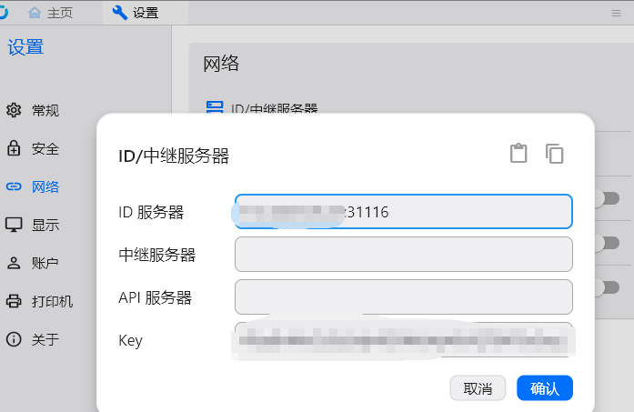

自建rustdesk
服务器端配置
1：服务端rustdesk-serv，直接去github根据vps系统下载好对应的文件，给好权限，用systemd方式运行比较稳定，debian配置如下
1. 创建 hbbs 服务文件
sudo nano /etc/systemd/system/rustdesk-hbbs.service
粘贴以下内容（根据你的实际路径修改），默认是21118端口，这里是修改自定义端口版本：
[Unit]
Description=RustDesk ID/Rendezvous Server (hbbs)
After=network-online.target
Wants=network-online.target
[Service]
Type=simple
User=root
WorkingDirectory=/etc/rustdest
ExecStart=/etc/rustdest/hbbs -p 31116 -r vps-ip或域名:31117
Restart=always
RestartSec=5s
LimitNOFILE=65535
MemoryMax=512M
[Install]
WantedBy=multi-user.target
2. 创建 hbbr 服务文件
sudo nano /etc/systemd/system/rustdesk-hbbr.service
粘贴以下内容：
[Unit]
Description=RustDesk Relay Server (hbbr)
After=network-online.target
Wants=network-online.target
[Service]
Type=simple
User=root
WorkingDirectory=/etc/rustdest
ExecStart=/etc/rustdest/hbbr -p 31117
Restart=always
RestartSec=5s
LimitNOFILE=65535
[Install]
WantedBy=multi-user.target
3，将创建好的文件移动到
mv /etc/rustdest/rustdesk-hbbs.service /etc/systemd/system/
mv /etc/rustdest/rustdesk-hbbr.service /etc/systemd/system/
# 启用并立即启动
sudo systemctl enable –now rustdesk-hbbs
sudo systemctl enable –now rustdesk-hbbr
# 查看状态（重要！）
systemctl status rustdesk-hbbs
systemctl status rustdesk-hbbr
#如有修改
systemctl daemon-reload
systemctl restart rustdesk-hbbs systemctl restart rustdesk-hbbr
systemctl status rustdesk-hbbs –no-pager systemctl status rustdesk-hbbr –no-pager
检查端口：
ss -lnptu | grep hbbs
如果配置生效，你应该看到：
31115
31116
31117
31118
31119
而不再是默认的：
21115
21116
21117
21118
21119
| 服务 | 端口 | 状态 |
|---|---|---|
| hbbs NAT测试 | 31115/TCP | ✅ |
| hbbs 主服务 | 31116/TCP+UDP | ✅ |
| hbbs WebSocket | 31118/TCP | ✅ |
| hbbr Relay | 31117/TCP | ✅ |
| hbbr WebSocket | 31119/TCP | ✅ |
至此，服务器端配置完毕。
Key（公钥）怎么查看？
在你的 RustDesk 目录（/etc/rustdest/）执行：
cat /etc/rustdest/id_ed25519.pub
或者：
sudo cat /etc/rustdest/id_ed25519.pub
输出示例：
4TqvBrMuOtJ2a3dy4GKWrbKyKkVQT9AF5oSeyLbCiMQ=
把整行内容复制到 Windows 客户端的 设置 → 网络 → Key 中。
备份的时候，直接把整个目录打包，以后需要还原直接解压就行，这样key可以保留，如果不保留，每次运行也会自动生成新key
客户端配置
直接到github下载rustdesk（注意不带server）
Windows 客户端配置
RustDesk：
设置 → 网络
填写：
ID服务器(ID Server)
ip或域名:31116
中继服务器(Relay Server)#如果vps很烂，这里最好也留空，这样连上后会优先走p2p直连
ip或域名:31117
API服务器(API Server)
留空
然后填写 Key：
your key
保存即可。
